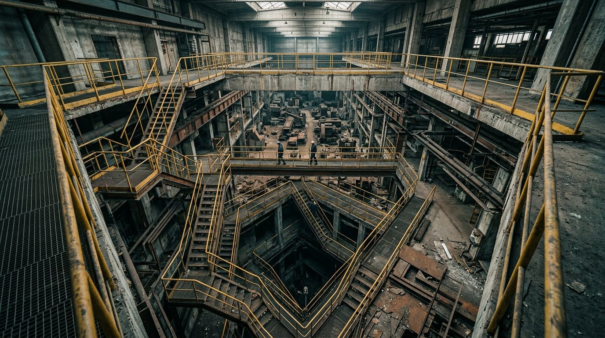
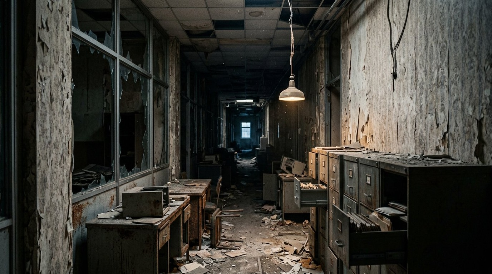

Repères et accès
L’Usine est la première carte entrée dans le jeu. La zone industrielle et les installations de l’usine chimique n° 16 furent louées illégalement à TerraGroup ; pendant les Contract Wars, les locaux devinrent le théâtre d’affrontements entre l’USEC et le BEAR qui déterminèrent le contrôle du quartier industriel. Après le chaos, les installations servirent de refuge aux civils, aux Scavs et aux militaires, y compris les restes dispersés des contingents USEC et BEAR. Fiche publique et libellés de jeu.
L’accès direct depuis l’écran de sélection des lieux se débloque en progressant dans le chapitre Tour ; avant, on n’entre dans l’Usine que par transit. Aucun niveau minimum n’est exigé par les données consultées.
Jour
20 minutes, 7 à 8 PMC. La version de jour est la référence la plus jouée.
Nuit
25 minutes, 5 à 6 PMC. Une variante distincte est enregistrée dans les données sous « Usine de nuit ».
Volume
119 points de spawn relevés sur la carte, dont 34 points côté Scav. C’est le lieu le plus compact du jeu : on le traverse en une seule ligne droite.
Une divergence à signaler. La fiche publique consultée le 18 novembre 2026 décrit Tagilla comme la rencontre de l’Usine. L’instantané des données de jeu du même jour ne liste plus que des infectés : Infected Tagilla (présence 50 %) et des infectés crieurs. Nous publions les deux informations côte à côte plutôt que d’en privilégier une ; la fiche du client fait foi.

Sorties et transits
Huit sorties sont documentées par la fiche publique : quatre pour les PMC, deux pour les Scavs et deux partagées. Les données de jeu recensent dix intitulés de sortie. Les deux listes ne se recouvrent pas tout à fait : la fiche publique et les libellés de jeu n’emploient pas les mêmes noms pour certaines sorties, et nous ne forçons pas une correspondance non établie. La couche « Intitulés de jeu » donne la liste brute de l’instantané.
Sorties documentées
Fiche publique du 18 novembre 2026.
| Sortie | Camp | Toujours ouverte | Usage unique | Conditions | Notes | |
|---|---|---|---|---|---|---|
| Cellarslibellé de jeu : Caves | PMC | ✔ | ✘ | ; Used to open the door to the extraction | — | pmc |
| Courtyard Gate | PMC | ✔ | ✘ | ; Can also be accessed from the 2nd floor locker room. | — | pmc |
| Gate 0libellé de jeu : Porte 0 | PMC | ✔ | ✘ | — | — | pmc |
| Med Tent Gate | PMC | ✔ | ✘ | ; Used to open the door to the extraction | — | pmc |
| Camera Bunker Doorlibellé de jeu : Caméra porte Bunker | Scav | ✔ | ✘ | — | — | scav |
| Office Windowlibellé de jeu : Fenêtre du bureau | Scav | ✔ | ✘ | — | — | scav |
| Gate 3libellé de jeu : Porte 3 | Partagée | ✔ | ✘ | — | — | shared |
| Smugglers' Passage | Partagée | ✔ | ✘ | Note with code word Ark | — | shared |
Transits sortants
Trois destinations, toutes disponibles une minute après le début du raid.
| Transit | Destination | Camp | Conditions | Emplacement |
|---|---|---|---|---|
| Transit vers les bois | woods | PMC et Scav | Only available 1 min after raid start | At the Courtyard Gate extraction |
| Transit vers les douanes | customs | PMC et Scav | Only available 1 min after raid start | Med Tent Gate extraction side outdoor area |
| Transit vers le labo | the-lab-dark | — | — | — |
Intitulés de jeu
Instantané des données de jeu, sans correspondance forcée avec la fiche publique.
| Libellé français | Intitulé de jeu | Camp | Commandée par un interrupteur | Correspondance |
|---|---|---|---|---|
| Caves | Cellars | PMC | non | retrouvée dans la fiche publique |
| Passage des contrebandiers | factory secret ark | PMC | non | absente de la fiche publique |
| Portail de la cour | Gate o | PMC | non | absente de la fiche publique |
| Porte 0 | Gate 0 | PMC | non | retrouvée dans la fiche publique |
| Porte 2 | Gate 2 | PMC | non | absente de la fiche publique |
| Porte 3 | Gate 3 | PMC | non | retrouvée dans la fiche publique |
| Portes tente médicale | Gate m | PMC | non | absente de la fiche publique |
| Caméra porte Bunker | Camera Bunker Door | Scav | non | retrouvée dans la fiche publique |
| Fenêtre du bureau | Office Window | Scav | non | retrouvée dans la fiche publique |
| Porte 3 | Gate 3 | Scav | non | retrouvée dans la fiche publique |
La sortie Cellars et la sortie Med Tent Gate s’ouvrent avec la clé de sortie de secours de l’usine : c’est la seule clé documentée pour ce lieu, avec la carte d’accès du local de stockage TerraGroup. Le passage de contrebandiers exige une note portant le code « Ark ».
Rencontres et menaces
Le profil PvE ajoute des bots PMC USEC et BEAR sur l’Usine, avec des rencontres de niveau bots supplémentaires qui n’existent pas dans le profil PvP Zone. Les infectés, eux, sont présents dans les trois profils consultés : le patch 1.3.0.0 du 29 octobre 2026 a introduit un événement d’Halloween et une infection qui touche désormais aussi les cartes ordinaires. Notes du patch 1.3.0.0 et communiqué d’événement.
| Rencontre | Présence | Zones de spawn | Escortes | Localisation (fiche publique) |
|---|---|---|---|---|
| Infected Tagilla | 50 % | BotZone | — | — |
| infectedScreamer | présence certaine | — | — | — |
Ce que les données montrent
Les zones de spawn de l’Infected Tagilla sont concentrées sur une zoneidentifiée du secteur des bots. Les rencontres sans zone localisée sont des infectés crieurs, présents en nombre.
Ce que les données ne montrent pas
Aucun point de vie, aucune distance d’engagement et aucune fréquence d’apparition ne sont publiés. Les pourcentages ci-dessus sont des présences d’instantané, pas des chances par raid.
Dangers de terrain
L’Usine ne compte aucun champ de mines, aucun sniper de bordure et aucune claymore dans l’instantané des données : c’est la seule carte de référence sans danger de bordure documenté. La contrepartie est un terrain fermé, à trois niveaux, où les angles sont courts et la visibilité nulle.
Aucune zone de danger relevée dans les données de la carte.

Clés et butin
Deux clés seulement sont documentées pour l’Usine, et l’une d’elles conditionne deux des quatre sorties PMC. C’est la carte où la clé vaut presque autant que la sortie.
- Factory emergency exit key accès permanent documenté quête : ✔
- TerraGroup storage room keycard accès permanent documenté quête : ✔
Point d’attention. Le patch 1.2.0.0 a ajouté deux clés aux Douanes, mais aucune nouvelle clé n’a été annoncée pour l’Usine. La liste ci-dessus reste celle de la fiche publique : elle peut être en retard sur le client.
Conduite selon le profil
Sur l’Usine, la question n’est pas « quelle sortie » mais « quelle porte ». Le bâtiment administratif offre les sorties les plus contrôlées, donc les plus disputées ; la cour et la porte de service offrent des sorties plus courtes et plus exposées. Les retours d’expérience publiés sur Reddit décrivent l’Usine comme la carte la plus simple à lire : il n’y a presque rien d’autre à contourner que le bâtiment lui-même. Fil Reddit sur les sorties les plus faciles à retenir.
- Débutant. Entrer par un transit plutôt que par l’Usine directement : le transit vers les Douanes se trouve du côté de la sortie de la tente médicale, et celui des Bois du côté de la porte de cour. On découvre la carte sans risquer son kit.
- Confirmé. Choisir une sortie à l’avance et la traiter comme un objectif : la sortie de cour est la plus proche des postes de travail, la sortie de la porte de service expose moins longtemps.
- Expérimenté. Traverser le bâtiment sans s’y arrêter, puis décider en cours de route. La carte est trop petite pour qu’une erreur de route soit récupérable.
| Profil | Durée | Effectif | Sorties PMC | Sorties Scav | Rencontres | Ennemis |
|---|---|---|---|---|---|---|
| PvP Zone | 20 min | 7-8 | 7 | 3 | Infected Tagilla, infectedScreamer | des scavs, infectedScreamer, Infected Tagilla |
| PvE Zone | 20 min | 7-8 | 7 | 3 | BEAR, Infected Tagilla, USEC, infectedScreamer | des scavs, USEC, BEAR, infectedScreamer, Infected Tagilla |
| PvP Season | 20 min | 7-8 | 7 | 3 | Infected Tagilla, infectedScreamer | des scavs, infectedScreamer, Infected Tagilla |
| Variante | Rattachement | Durée | Effectif | Sorties | Rencontres |
|---|---|---|---|---|---|
| Usine de nuit | Variante nocturne de l’Usine | 25 min | 5-6 | 9 | Infected Tagilla, Prêtre Cultiste, infectedScreamer |
| Infected Factory | Événement infecté sur l’Usine | 20 min | 4-6 | 0 | Infected Tagilla, Infecté, Infecté |
- ennemis +USEC, BEAR
- boss +BEAR, USEC
Une correction d’éclairage, pas de changement de règles. Une mise à jour technique de novembre 2026 a corrigé l’éclairage de l’Usine infectée et un corps de scientifique non fouillable au Laboratoire infecté. Aucun changement de sortie ni de rencontre n’est mentionné : les tableaux ci-dessus restent valables pour les configurations Halloween.
Sources et limites
Les chiffres de cette fiche proviennent d’un instantané communautaire des données de jeu du 18 novembre 2026 et de la fiche publique du même jour. Ce ne sont pas des cartes officielles et cela ne constitue pas un build attesté du client. Aucune mesure n’a été réalisée dans le jeu : les positions, les distances et les comportements sont ceux des sources citées, pas des observations directes.
- Carte de Tarkov — liste des lieux : inventaire des treize lieux de référence.
- Usine — fiche de lieu : lore, sorties, clés et rencontres.
- Tarkov.dev — cartes et rencontres : instantané du profil PvP Zone.
- Tarkov.dev — libellés français : intitulés de sortie traduits.
- Tarkov.dev — cartes du profil PvE et du profil saisonnier : comparaisons.
- Patch 1.3.0.0 et communiqué Halloween : infectés et événement.
- MapGenie et Kappa Guide : repères communautaires, consultés comme aides de lecture et non comme sources de vérité.